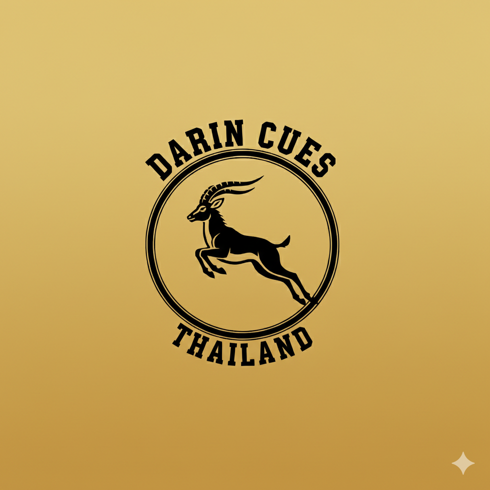

Darin Cues
CUE PROTOTYPE SERIES
บันทึกการวิจัยและพัฒนาไม้คิวต้นแบบ
R&D Projects
Project 01
The 10-Day Build (Ebony)
บันทึกการวิจัยและสร้างไม้คิวต้นแบบ 10 วันเต็ม เจาะลึกกระบวนการเข้าจำปาไม้ดำดง (Black Ebony) ด้วยมือ และระบบบาลานซ์น้ำหนักเชิงวิศวกรรม
Project 02
Premium Ash Wood Series
ศาสตร์แห่งการคัดเลือกลายไม้แอชเกรดพรีเมียม และเทคนิคการเหลาปลายไม้คิวสนุกเกอร์เฉพาะตัว เพื่อมอบแรงสะท้อน (Feedback) ที่สมบูรณ์แบบ
Project 03
The 10-Day Build (Ebony)
บันทึกการวิจัยและสร้างไม้คิวต้นแบบ 10 วันเต็ม เจาะลึกกระบวนการเข้าจำปาไม้ดำดง (Black Ebony) ด้วยมือ และระบบบาลานซ์น้ำหนักเชิงวิศวกรรม
Project 04
The 10-Day Build (Ebony)
บันทึกการวิจัยและสร้างไม้คิวต้นแบบ 10 วันเต็ม เจาะลึกกระบวนการเข้าจำปาไม้ดำดง (Black Ebony) ด้วยมือ และระบบบาลานซ์น้ำหนักเชิงวิศวกรรม
Project 05
The 10-Day Build (Ebony)
บันทึกการวิจัยและสร้างไม้คิวต้นแบบ 10 วันเต็ม เจาะลึกกระบวนการเข้าจำปาไม้ดำดง (Black Ebony) ด้วยมือ และระบบบาลานซ์น้ำหนักเชิงวิศวกรรม